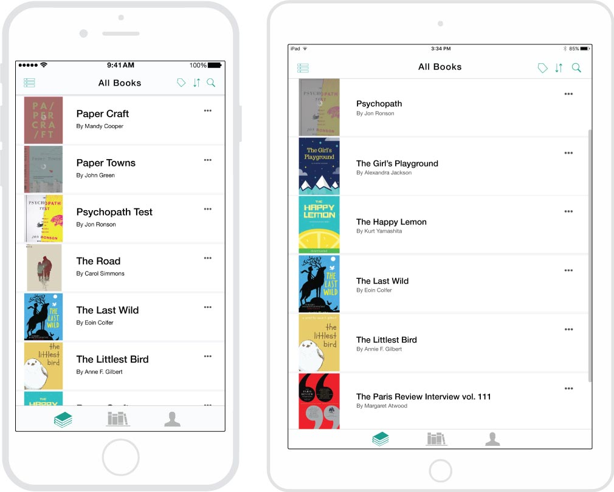
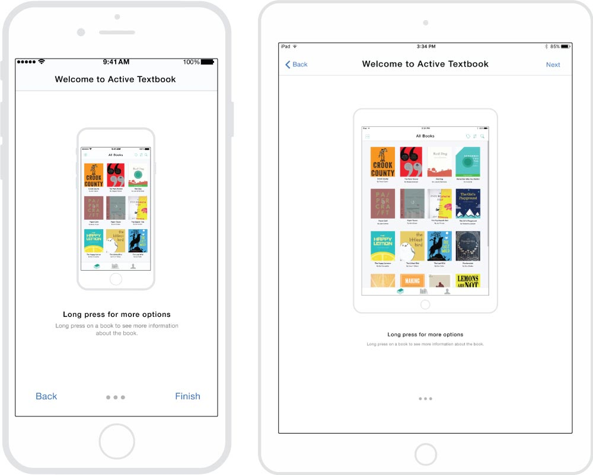

Jan. – Apr. 2017
Internship as a Designer
At Evident Point, a software company located in Richmond, B.C.
Active Textbook is an eBook reader that is available on the web, play store and app store. I was assigned to redesign their flagship iOS app to fit current iOS design standards and enhance the product experience for the users. I mainly focused on following Apple’s design guidelines, ensuring the flow of the app was flexible to users’ needs and onboarding for new users using the applications.
I did research to gather information about the purpose of Active Textbook and the users’ goal using active textbook. Using this information, I was able to make insightful design decisions on possible actions or flow of actions a user may take using the app. I also analyzed the underperforming parts of the current iOS application and made changes to that. I pitched the changes to my supervisor and the developer explaining my design changes.

Cover view for the books
Hamburger menu
To start off, I interviewed people who were responsible for the app, to see where they thought existing problems were or where they thought the app could improve.
I looked into the actions a user would take if they were to use the app, or what purpose they would have when they are using the app.
I made mockups using Adobe Illustrator for each screen that was needed from the research.
Here are some variations of grey scale mockups I did of the same screen to test how the placement of elements would work with each other.


Variations of low fidelity mock-ups
High fidelity mock-ups are effective for allowing the developer and my supervisor to get a better understanding of how the visual design and the elements interact with each other in the app.
After every iteration, I would email it to the supervisor and developer. Then a meeting will be held to discuss and critique my designs. After the meeting, I would go back and make changes to the mockups and present them again.
Here are examples of high fidelity mockups of both iphones and ipads

Cover View
List View

Account Tab

Book Description
After finishing the mockups, I presented it to my co-worker and supervisor. We would discuss what we could iterate upon. During discussion, some difficulties arrived when we had different opinions for the app's features.
Specifically, how the user will be able to find more information about the book in cover view. I came up with a few solutions for the supervisor to choose from, but the supervisor didn’t see the need to change the way book details were being accessed -- which was the floating green 'i' icon.
Cover book views that can't access "More Options" of a book
In the end, I continued to iterate on the design and convinced my supervisor on a solution that we were both happy with. Instead of having a floating icon, the user can access details about the book through a long press on the book. However, the user won’t be able to know about this action without instructions, therefore, I added onboarding to the app.

The chosen design option for accessing "More Options" of a book
By adding onboarding to the Active Textbook, new users will be able to learn about how to use the reader. Active Textbook is updated to modern standards of design and allows for a smooth user experience for their readers. This will increase value not only for the readers but for Evident Point. When users feel happy and in control using Active Textbook, they will continue using it and even recommend it to their friends, increasing their user base.

Onboarding: Step 1
Onboarding: Step 2
Onboarding: Step 3